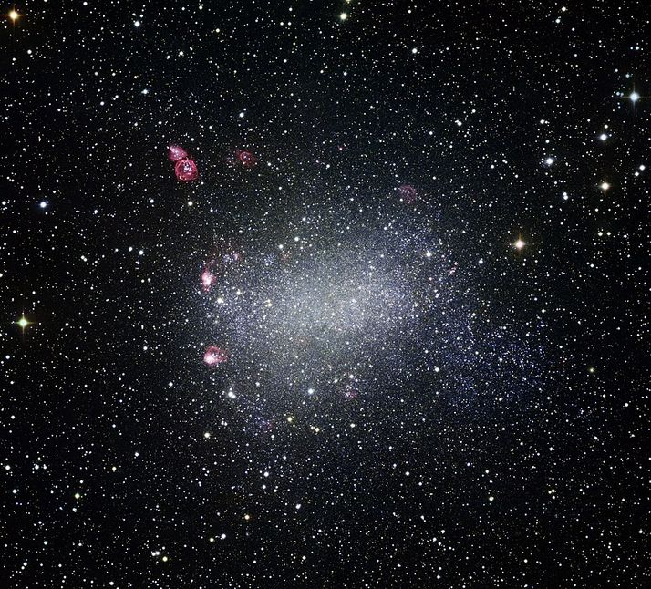

Across the Night Wall
by
Martin Isitt

- Table of Contents:
I
During the early centuries of our mission my posting was that of chief navigator.
"I see nothing that indicates any kind of civilisation," said Sara Reed, the Mission Commander and current Captain of the Eternity. The statement was directed at me.
We were among a handful of Custodians loosely clustered around the console, while a holo-representation of the blue-green planet, fifty metres across, turned slowly over the astro-lab's main plate. The world was roughly Earth-sized, and sheathed in an atmosphere: the distance from its star allowed water to be liquid on the surface.
"How long until you can get a full resolution?" Sara Reed said.
"At our current rate of deceleration," I hazarded, "seven and a half years. Maybe eight. I've got a few more months of work left to do on the upgrades. If it doesn't give me anything more substantial then I'm going off shift until then."
With nothing more to see, the gathering began to disperse. As the others drifted back to their workstations, the Mission Commander lingered. "Will you be going straight into hibernation when you go off shift?" she casually enquired, whilst keeping her gaze fixed on the vast blue globe.
I nodded. "I think so," I said.
She sought me out a few days later. "I've been considering your suggestion," she told me over a light supper.
We were in one of the observation suits that blistered from the skin of the ship's inner habitat — a vast cylinder turning at the centre of the Resident's habitat, like two concentric drums. Kilometres beneath us artificial twilight cloaked a patchwork of farms and woodland. Webs of lights were coming on, marking out the roads. Glowing strands merged into the sprinkled clusters of towns and villages. Further up the gently curving landscape, just visible in the hazy distance, mountains shouldering forested mantles basked in manufactured daylight.
The observation suite was lit only by the waning day. Furtively I watched Sara. Waiting. Her face was half in shadow. She met my gaze and bestowed a rare smile upon me.
"I think I would like another relationship," she said, "with you."
I couldn't hold back a grin. "Are you currently involved with anyone else?"
"I have three affairs." She drained her wine glass and rolled the stalk between her fingers, thinking. "I would like to develop one into an engagement but I don't find any of them emotionally satisfying. None are with command staff, and I think they find my rank intimidating."
"What about Lyndon? She's an executive officer. Didn't you have an exclusivity contract with her?"
Sara answered this with a grunt. Night was fast filling the suite and I was finding it difficult to see her features in the gloom. Silhouetted against the dusk, her shoulders sagged.
I said: "Will you wait two months while I finish the sensor upgrades?"
"Yes, I'm going off shift around then. And I'm going in for an upgrade as well. Do you have any physical preference?"
I made a show of considering what she'd said. "Let me look at you," I joked. But to my surprise she ordered the interior light on, stood, lifted her arms and turned slowly on the spot. Sara was almost as tall as I was then, athletic and elegantly poised. Like me, she enjoyed the virtual immortality that was one of the benefits of our nano-enhanced immune systems. Her uniform hid nothing of her form. My eyes travelled up her legs and rested on the curve of her buttocks before moving on. When they reached her bald scalp I pursed my lips.
She noted my expression. "Hair?" she suggested.
"Long," I agreed. "Red or blond, either appeals. I'm also scheduled for an overhaul at the end of my shift."
"You could do something about that paunch and the jowls. You've been enjoying your food too much recently, haven't you?"
"Lack of quality rather than quantity. Anything else?"
She sat down again and poured us both another glass of wine. "Let's spend the night together and I'll tell you in the morning."
I agreed, but with some reservation. We'd have little opportunity to spend time with each other until my work on the sensor upgrades was completed. In the end it took me nearly four months.
"The difference is negligible," she said.
"Only in the visible spectrum," I responded defensively. At my command the planet zoomed out so that it was a complete sphere again. We were alone in the science lab's cavernous viewing chamber. Most of my staff had gone off duty and retired to the freezers for the in-flight duration, while the subsidiary core automated their workload. Constellations of passive consoles twinkled in the gloom all around us.
Sara took the seat next to mine. "Show me." Her tone was brisk but her hand had come to rest on my arm.
"Not much to see yet. The scan's still running. It'll take some time for all the data to be correlated. But once it's completed, it'll update continuously."
"Without supervision."
"Yes."
We both stared at the planet in silence.
"I've missed you," I said.
She nodded.
We stood up and walked side by side to the exit. Behind us the holo-plate powered down and the bright blue world faded away, leaving the chamber in darkness.
By the time we emerged from the cryo-tanks again, the Eternity had fallen into orbit around the planet. Twenty thousand Residents were preparing to descend to the surface. But there were still tests to be carried out before colonisation could begin. Planetary Science dropped atmospheric probes into low orbit to gather samples. We discovered that the cloud cover was thickly laced with complex protein molecules. To begin with we assumed it was simply a kind of airborne bacterial analogue. But astrobiology observed behaviour in the samples collected that proved beyond doubt that there was a form of intelligence present. The clouds were huge neurological colonies floating through the atmosphere, their thoughts radiating out into space.
After lengthy debate with the Residents, we called off the colonisation. We had no right to trespass upon the environment of this extraordinary culture.
Though they had no option but to agree, our mortal charges were unhappy with the decision. It would be several thousand years or more before we reached the next habitable planet. Those Residents who now yearned for a world of their own would be long dead and forgotten. We sympathised, but would not be dissuaded. Our hulking vessel heaved itself out of orbit again, while we — myself, Sara and the rest of our shift — returned to the freezers to sleep the years away.
On we journeyed, travelling from one star system to the next, at each stop leaving behind enclaves of humanity. Inevitably, as centuries passed, we were changing — all of us. But I can't put a finger on a time when it all began to go wrong. Perhaps it was as we approached the edge of the Milky Way's spiral arm — the Night Wall. In this region of space the galactic compression waves were insufficient for star formation and vast, impotent dust clouds drifted aimlessly. Light-years of darkness stretched away before us: behind us, two hundred and fifty thousand years of journeying through the vacuum.
In the interstellar void resources were scarce, but every star system we encountered was an oasis of raw materials. With the passage of time came technological advancement. The ship's systems and components were continuously being improved and upgraded. So much so that by the time we set out across the Night Wall virtually nothing of the original Eternity existed.
And amongst the Resident population things changed. How could they not after so long a period of confinement within the ship's vast hull? Alas I, of all people, should have seen it. Perhaps I did, but dismissed it as some kind of delusion, a vestige of those strange dreams freighted with portents that visited me in the cryo-tank where centuries were compressed into moments. I was a realist and I didn't believe in omens. Notions of energies kindled in the heart of distant Earth. Hah! The Master Word from which all human speech is derived and which resides in the heart of every human born upon our homeworld's nurturing soil. It seems laughable, even now when I know the truth. These things were myths, concepts that had died out with the ancient religions they spawned. To entertain these fantasies in my calculations was to step upon the road to delusion, to give life to my dreams of that land of perpetual night.
At the time, we didn't even realise that something was wrong with the Unuiverse.
Mythic was a small boy when he asked his nurse: "Why did the sun die?"
She smiled with patient condescension because children believe in myths and tales of legend.
"There is no 'why'," she had said. "It's just how the stories are told. One day, when you are a man, you will understand that we are the Sun, and our humanity is the one true light in the infinite darkness."
Now a man, a Watchman, standing at his post before the Great Door and looking into the endless night, he recalled those words and still didn't understand what she'd meant.
At his back the slope of grey crystal-form alloy reared upwards for miles, tapering into the utter blackness of the sky. A solitary star shone at the pinnacle of the Great Pyramid: The Tower of Observation, where the Monstruwacans used the sensitive instruments to scan the Land and record all that they saw. In front of him, a mile out, the Earth Current lit the nearby terrain with spectral blues. Posted at the Great Gate, Mythic was closer to the barrier than he'd ever been. His vision, enhanced by the visor of his helm, pierced the dark but he saw only stillness. And the shattered and burned remains of those beasts that had come too close.
Nevertheless, despite that evidence of the Earth Fire Circle's deadly power, being outside the Redoubt for the first time filled him with horror. His Night-Hearing, more acute than most, made him shiver right down to the soul. He felt utterly naked before the Night Land. Those mountain-sized Watchers waited with geological patience for something unknowable. And worse: the House of Silence.
Mythic's hand dropped to finger the grip of his Diskos. He found some comfort from the contact. The visor of his nightsuit occluded his view of those grim shapes; he made himself focus on the glow emanating from the Circle.
The Captain of the Full Watch arrived. "Don't let your mind linger on what lies beyond the Circle." His face was masked by his helm and there was no clue in his tone that his words were a reprimand. "When we speculate on what exists in the Land, be warned: there are things out there that know we're listening. Remember what you've been taught."
Mythic hesitated a moment, then recited, "We do not grant the forces that move in the Night Land names, but instead label them with reference to attribute and behaviour. To do otherwise is to invite them into our minds."
"Well remembered. Now put your words into practice, and don't concern yourself with those things that exist outside the bounds of your duty. Until the Sleep Time, you and the men of your Watch are responsible for the sanctuary of our people. Later, when you've learned to master your thoughts in the Land, you'll join the squads that patrol the Circle. Until then, Watchman, though you might be far from the Circle and safe from immediate danger, never underestimate that responsibility."
"I won't, Captain."
"Good."
He departed.
Alone again, Mythic tried to follow the advice he'd been given. It seemed impossible. The constant drone coursed through his subconscious mind, an unending torrent of whispers flowing just beneath the surface, its current so strong that sometimes he imagined it manifest on the edge of physical hearing, like the incessant buzz of tinnitus. Out here, unshielded by megatons of unyielding metal, it was always louder. If he closed his eyes it was worse. So he continued to stare, concentrating on the glow of the Circle, and scanned the aether searching for the voice in the noise.
The Voice.
It had always been there, different from the vile clamour. The faint wordless whisper was so submerged that only by an extreme effort of concentration was he able to diminish all the other sounds enough to hear it. He'd heard the voice all his life, and learned soon enough not to talk about it if he didn't want to invite ridicule. Nonetheless he remained certain that it existed outside of his imagination. It was real, and it was out there. He was also sure beyond all doubt that once he had known the owner of that voice.
II
The discovery of intelligent life gave us hope that there could be more sapient species out there. It only took another few thousand years to find them.
The Quinches were like us in many ways, if not physically then perhaps in some parallel, similar in their outlook. Centres of population crusted the continents with architecture that mirrored our own in diversity, if not in design. They had spread throughout their star system, but as yet could only contemplate the vast interstellar distances beyond. Once, they confessed to us, their ancestors had raped their world for its resources with scant regard for the long-term consequences. They would have tried to shoot us out of orbit had we ventured into their system a thousand years earlier. Yet they avoided catastrophe, learning the fundamental lessons before it was too late. Their homeworld still bore the scars.
And there were others, in other solar systems. To the Dring we became the focus of reverence, our journey the ultimate pilgrimage. They beseeched us to help them in their plight. Their world, locked in eternal winter, once revolved about a yellow main sequence star. They claimed that it had faded in the space of a few million years, and now the lacklustre orange-red sun that rose every morning could manage little more than a frigid twilight glow at noon. In our arrogance we faulted their science. We tried to make them understand that a star took a thousand times that long to die. But they were unshakable in their belief, as we ourselves could not give credence to the existence of the demon that was consuming their sun.
Nevertheless the Dring wished us well as we departed. I remember being saddened as their icy planet dwindled. Perhaps we had been rash to discard the faith of these benign and deeply spiritual people. In the end they had refused us permission to establish a community on their homeworld, and I couldn't help wondering if humans had become somehow diminished in their esteem. If only I'd been more circumspect as to what lay between the lines of the extensive library of theological texts that they had allowed us to examine. Could we have prevented the catastrophe?
I had been in cryo-sleep for a little under fourteen hundred years when the duty shift revived us. Now, the process had been significantly refined. This time I was lucid almost immediately after being disconnected. A few aisles down, Mission Commander Reed - Sara — was being lifted, naked and fluid dripping, from her tank by manipulators. She was delivered onto her feet and stood for a moment, glancing about and looking as unsettled as I must have seemed. She saw me and came over, her initial steps unsteady.
At first, face to face, we hesitated to speak. Finally, I said: "Hello, Sara."
"Hello, yourself."
The fluid was dissipating from our bodies (being absorbed as nourishment, we later learned). The air was pleasantly warm. We hugged gingerly, and then broke apart as others started to emerge from the tanks.
On leaving the chamber, we discovered it was no longer in the same part of the ship. We seemed instinctively to know where to go. After we'd clothed ourselves, the duty shift received us.
"How long?" I asked Dufrane, the current acting Captain. He told me. There was something about his tone that unsettled me.
"What's wrong?" I asked him.
"It's probably better that you see for yourself."
We assembled in the main conference chamber. To my surprise the entire ship's complement of Custodians was present. Everyone had been revived. On either side of me, tiers of faces, bewildered expressions, swept away around the perimeter of the huge central table. Behind and above us the Residents’ balconies were empty.
Dufrane brought the meeting to order, an image of his head appeared as big as a house over the holo-plate. It turned slowly as it spoke, his amplified voice booming down upon us. We listened in shocked silence. The discreet observation posts we'd left in orbit around the Dring planet were still relaying time-lagged information. They were many light-years behind us now and the dull red sun had almost faded to nothing. As we watched their alabaster world come apart in a series of gigantic explosions, we all understood that the Dring had been extinct for centuries. There was no explanation, no clue as to what could have caused the disaster. But nothing could be done about it now. I accept what had happened and turned my attention to other matters. However, it followed me into my dreams, and transformed them into nightmares.
I slept on, another three thousand years, while several virgin worlds were successfully seeded with colonists, and then I woke with the appropriate grounding for my duty roster neurologically coded. On this shift I'd be joining Planetary Reconnaissance.
After my revival the harrowing visions of destruction and decay I'd experienced during my long sleep, tormented in my thoughts, frequently distracted me from my work. Though I coped without my psych-evaluation, I knew I should talk to someone about it.
Sara would have been the natural choice. We had spent a month together prior to hibernation after the Dring catastrophe. We enjoyed each other's company and went to the tanks with a certainty that we would go on from where we left off when we were revived. But I was brought out a full five years after she'd been woken, only to discover that she had renewed her exclusivity contract with the executive officer, Lyndon. It shouldn't have worried me that much; as immortals we had time in abundance.
Nonetheless, I brooded, unable to put her out of my mind. I tried not to let it show, and perhaps not to be outdone, initiated several relationships of my own with subordinate staff.
Maybe, on some subconscious level, I was already afraid to be alone in the dark.
Eventually Sara cornered me in my quarters.
"Are you avoiding me?" she asked. She'd come, she said, in order to review my data. An excuse, I realised belatedly. The question took me by surprise.
"How so?" I said, without looking at her and trying to sound indifferent.
But her disapproval was clear. She glowered at me, which made me feel stupid, and utterly helpless.
I stared back at her through the convoluted diagrams suspended in the air between us, and protested that I didn't know what she meant, then shrugged dismissively.
"Very well, I'll leave you in peace," she said, and gestured at the diagrams. "We can do this at another time." The wall formed an aperture. She left me standing there, by myself.
The Eternity was already in-system and I had a library of information to sift through, which kept me busy for another three months until orbital insertion. Initial observations had suggested an uninhabited planet, its rotation so slow as to be almost imperceptible. The mantle seemed to have solidified aeons ago. Only a remnant of a core still spun sluggish at its heart: just enough to generate a weak magnetic field. The star was an orange-red dwarf that had been christened Octavia before my waking, after a famous Resident pioneer, long left behind. I’d slept through her life.
We were only a week out when a colleague, Ira, spotted a feature on the fringe of the planet's terminus that seemed somehow out of place. It was too regular to be a natural formation, and soon turned out to be the first of many similar ruins littering the surface. "Nothing seems to be more than a couple of thousand years old..."
We had the planet mapped in its entirety by the time we achieved orbit. It floated over the astro-lab's holo-plate, with some of the derelict structures expanded to show detail. I had to agree with Ira. On Earth there were relics in abundance at the time of our departure that were much older, like the Egyptian pyramids. "We won't know for sure until we go down and have a closer look. Any ideas?"
My tone was sharp. Distracted as I had been, I'd missed the ruins on my initial survey, and it irritated me to have one of my staff bring the mistake to light. We were sleeping with each other, and Ira had been tactful, but that didn't make me feel any better.
She shrugged, not appearing to notice my indignation. "Hard to say. But extinction appears to be total. It looks like there's nothing left alive down there. We'll see more detail as we get closer. I've included a series of test scenarios to apply to the figures. I wouldn't like to speculate until we've seen the results."
"It could be anything: comet strike, massive coronal mass ejection. Global epidemic is unlikely. There'd be something left; plant life at least. Perhaps a nearby star went nova?" Ira thought that that was unlikely. The contradiction didn't improve my demeanour, but I managed my temper.
"Test the scenarios but keep an open mind," I told her evenly. "We won't know for sure until we get down there. Suspend the preparations for colonisation. We need to figure out what happened to the previous tenants."
It wasn't long before I was left alone at the console, with an overriding sensation that I was rapidly becoming unpleasant to be around.
The news of the postponement was not well received in the Residents' habitat — that is, until images of the dead landscape were released. Of the twelve thousand volunteers (enough to man two base ships), over eighty percent withdrew their application. The news had created a media storm and morbid fascination swelled within the mortal population. The bookies had amassed a fortune in bets and most everyone on board was glued to their viewers as the first pictures from the explorers were televised throughout the ship.
I'd selected several sites, but focused on what appeared to have been the largest centre of population: a sprawling network of decaying buildings on the equator that we named City Number One. There was a structure at the centre that had drawn my interest. It was by far the tallest surviving artificial feature on the planet: a steep-sided cone, some three thousand metres tall, surmounted by a slim spire that went up half as far again. Long fibres, encrusted with fragments, trailed from the tip, drifting gently on the breeze, like the tendrils of a sea anemone. The whole thing stood in the middle of an open area of cracked stone that was just big enough to contain it. As the explorer homed in on the apex of the spire we saw that it had broken off, a clue that once it had been taller. I brought the explorer down in a spiral around it, keeping its primary scanner focused inwards on the spire. A three-dimensional diagram of the structure, bristling with labels, began to rise out of a secondary holo-plate.
"I think I have an idea what it could be," I heard someone mutter. The viewing chamber was crowded and I had no idea who'd spoken.
"Enlighten us then, if you would," someone else said.
"Well, it's built almost exactly on the equator — to the centimetre. And those fibres are comprised of bundled chain molecules of diamond. Then there are the channels running down the entire length. They contain devices similar to the mag-coils that were once used on those old trains in the Residents' habitat. I'd suggest it's some kind of sky lift."
"A space elevator?"
"Whatever you want to call it..."
Further speculation was abruptly cut short. The explorer had reached the top of the cone. No one was at first sure of what they were seeing.
"Can you zoom in on those loose stones?"
I adjusted the optics. The image exploded, blurred, then sprang into perfect focus. Utter silence filled the room. There could be no mistaking what we were seeing. Regardless of the inhuman features, it was without doubt a skull that stared back at us. And it was not alone. There must have been hundreds of them. That was my initial guess. They rested amid other bones, straight and curved, of different sizes and shapes, some whole, others fractured and broken. Slowly the picture pulled back out again and I revised my original estimate. There were thousands... no millions...
...And then I realised. "Oh my God. The whole thing's made of bones," I said quietly.
"How many individuals do you imagine it would take to make something that big?"
"Billions..."
I'd covered my mouth with my hand, at the same time appalled and fascinated. I removed it long enough to say: "A whole planet's population." It remained a mystery how this grim edifice had come about. In general, opinion tended towards self-annihilation through accident or war. After all, had we not nearly destroyed ourselves in the twenty-first century? So it was possible. Perhaps humans had been one of the lucky ones, surviving that era in their social and technological development. We certainly would not have had the maturity to thrive in the closed society that existed aboard the Eternity.
But something continued to nag at me. I turned to the data once more, in order to seek an alternative solution. My thoughts continued to linger on the dreams I was having in cryo-sleep: so vivid, more like real experiences than a picture constructed from a mosaic of memories.
I eventually suggested to my Mission Commander: "I think it has something to do with what's happening to the stars," when she’d asked for my thoughts on the gruesome memorial.
I saw the first lines of concern creep across Sara's brow. Her tone softened. "What's happening to the stars?"
The condescension that I perceived in her voice irritated me, but the figures I brought up on the plate went a little way towards preserving my credibility. I took her through them. "The stars are dimming," I insisted. "It's as the Dring tried to tell us. And rather than face their ultimate fate, they destroyed themselves. I think the same happened here in the Octavia System. And it's happening everywhere."
She remained sceptical. Perhaps because of that, I could not bring myself to tell her about the dreams. In them I had experienced whole lifetimes through the ages of man, while my body was suspended in the tank. I'd been a cave man hunting mammoths across sweeping plains, a vagrant who’d died old and alone in the streets of an ancient walled city. I’d marched with the Greek phalanxes and studied in the libraries of Alexandria. In Rome I’d supped wine and gorged myself on fine foods, only to succumb at last to the madness of lead poisoning. And in twenty-fourth century New York I’d patrolled the streets with a badge and a gun.
And it was not only the past I’d dreamed. I’d seen the Earth, as it would be in years to come, turning so slowly now that a single day lasted ten years, and witnessed the ground torn open beneath my feet as a tremendous force from space struck the planet. I’d lived many lives watching the sky grow progressively darker as we’d descended into the rents in the world to escape the cold. And finally the Great Redoubt, where the last enclave of humanity subsisted and would snuff itself out rather than be consumed by the darkness.
It seemed to me that man's future was mirrored in the graveyard world we'd discovered, though I remained unable to voice my fears.
III
We began encountering similar worlds: infrequently at first, then, as millennia rolled by, with increasing regularity. Decimated races, on dead planets, circling dying suns.
On some worlds we found no trace of their passing at all, save their homes haunted by emptiness. Perhaps they fled the ravagers of their worlds, or maybe all that was left were ghosts. And in some cases evidence concluded that they’d chosen to destroy themselves, rather than face whatever it was that had threatened them.
Gradually, the number of dead worlds increased in number. I knew I couldn’t keep it to myself any longer.
Two hundred thousand years had passed (a great percentage of that time spent in hibernation) and Sara and I had found each other again.
But change was inevitable. Internally the Eternity bore little resemblance to the archaic vessel that set out from Earth so long ago. Back then, the processes that now provided the ship with power and propulsion had not even been imagined. By now, the sensorium was established, and though still in its infancy, I could no longer conceive how we’d managed to tolerate our longevity without it. Despite being immortal, we were still human, and, as such, subject to human frailties and fallibilities. Mentally, we Custodians had begun to suffer from our sustained existence.
Emotional individuality was becoming confinement.
If there was a detriment to the sensorium, it was that it set us even further apart from the Residents. In the outer habitat, change had not been for the better. Brain size was slowly shrinking. They were reverting to a tribal mentality.
Our ethics forbade us to interfere unless the Residents endangered the ship. But as they regressed, so their technological development diminished, along with their threat.
Nevertheless, I could not shake my growing unease. It was as though what was going on in the Universe outside had somehow found a way in. And the dreams I was having seemed suddenly too relevant to ignore. I’d already told Sara about them, captivating her with the stories of the Night Land: the daring deeds of those pale-skinned warriors that defended the Redoubt from the beasts prowling in the darkness. But that’s all I’d implied that they were: stories. Fantasies conjured up by my subconscious mind when slowed to a virtual cessation of function.
Sara and I were in our quarters, tangled in the sheets and still afloat on the swell of our lovemaking. The nerve chargers in the material had subsided to give us both a chance to recover. My mind was clogged with the residue of our emotion shared across the sensorium link. When it had first been established, we’d been eager to experiment. We’d nearly burned out our minds with pleasure. After that, we proceeded with caution until we were familiar with the emotional protocols.
I had a habit of talking ceaselessly after sex, dribbling inanities and vacuous trivia; it was a method I used to filter out the debilitating effects of the enhanced orgasms. It made her laugh and sometimes rekindled her desire.
Now I lay on my back, my body still tingling all over, my mind occasionally sparking from the effect of over-stimulated neurons. Sara had wrapped herself around me, gazing dreamily at my face and gently pushing her pelvis against my thigh in the hope of rousing me again. But, unable to bring myself out of the speculative mood I’d fallen into, I did not respond and continued to stare at the ceiling, searching for the words to tell her what I suspected without sounding like I’d just fried my brain.
Eventually, seeing the futility of her efforts, she gave up trying, propped her head on one arm and asked me what was wrong. “I felt it again, stronger than it’s been before. What are you afraid of? Speak to me.”
I didn’t answer at first. She continued to scrutinise my expression, looking for clues.
I still hesitated; I was almost afraid of her, of what she would think: that I was succumbing to some form of delusional psychosis. I saw a lengthy period of evaluation therapy stretching before me.
“Do you believe in reincarnation?” I asked, trying to sound indifferent.
She laughed. “What a ridiculous concept for an immortal.” Then she must have seen my expression change, because hers was suddenly serious. “I’m sorry, sweetheart. I didn’t mean that to be flippant. Is dying something you’re worried about?”
“No, of course not,” I said hurriedly.
Her hands touched my face; they were soft and clammy with a residue of sweat. She stroked my cheek.
“Do you,” she said, “believe in reincarnation?”
Now it was my turn to look at her. Searching. Once she had been Mission Commander Sara Reed. She still was, if in name only. By now, with the passing of so much time, very few of any of us remained unchanged from those original pioneers who had set out from Earth.
She’d kept these enhancements now for several shifts, but her appearance still unsettled me. She was near two metres tall, and at first glance starvation thin. However, a more intimate examination of her white-skinned frame brought to mind a woman of muscular build who’d been stretched. She looked like she was made of porcelain, but carried herself with a crane’s grace and no hint of fragility.
To my eyes, Sara was disturbingly captivating. Long black hair poured over her pale shoulders and down her long back, framing elegant features inset with black jewels for eyes. When we were alone together she refused to wear a scrap of clothing. The contrasting vivid pinkness of her sex and mouth against that powdery flesh would make me shudder with desire. She had taken to the stories I told her, of the people in my dreams that existed in the land of utter darkness, and had maintained this form longer than any before. I was getting used to her interpretation of my description, yet remained quietly relieved that it wasn’t quite accurate.
I couldn’t tell her that I believed it was real.
“I love you; you know that,” I said instead.
“I feel it.” She grinned and kissed me. The kiss became an embrace and then there was no more opportunity for talking for a while.
Perhaps if I had said something then, trusted her faith in me, then something could have been done to prevent what would happen.
A quarter million years and five thousand parsecs from Earth, the Night Wall yawned before us. During our meandering voyage we had spread our seed throughout a hundred star systems. Now a further five hundred thousand years of sleep awaited the Custodians while the Eternity coursed the starless void between the spiral arms. A skeleton crew would operate in shifts, maintaining a vigil over the ship and its mortal passengers.
The sensorium would ensure that we would not be alone during the long night. So I, older than any human had any right to be, set aside my unanswered questions, closed my eyes and descended into the still, icy waters of sleep.
“Where do the ab-humans come from?” Mythic asked his Captain.
It was a question he’d mulled over for a while now, ever since the first time he’d faced down those monstrous creatures and recognised something almost human in them. Lit by the fire of his Diskos, the tiny eyes were shards of pure hatred, but in them he had seen something else, buried so deep that he suspected the creature no longer felt it on a conscious level.
“Who knows?” said the Captain, who was not one for lengthy discourse at the best of times — which this certainly was not. A Long Patrol of a hundred souls had set out into the Land and now the remaining twenty-three were heading home. Mythic’s squad was stationed at the Circle, on hand to welcome them in. But, an hour ago, he had felt a closing danger impinging upon his Night Hearing, even before the Tower of Observation had spotted the ab-human horde moving with a pack of Night Hounds, drawing closer. His sense told him that the Beasts were not yet aware of the twenty-three Monstruwacans. The migration would carry them less than two hundred yards from the Circle, directly into the path of the homecoming patrol. The message had gone to the summit of the Pyramid; from there the Master Word went out into the Night Land. The Long Patrol had gone to ground.
In time, the horde passed into the light of the Earth Current: a heaving mass of mottled grey-skinned forms, ambling on two legs, sometimes hunched over on four. Tatters of matted brownish-red hair sprouted from armpits, shoulders and groins, tusks jutted from prognathous jaws. Under the eaves of heavy brows, splinters of crystal glinted in the dark hollows of eye sockets whenever they turned their low-slung heads towards the Circle. In the midst of the ab-humans, Night Hounds snapped and growled, grinning savagely at the watchers behind the barrier.
Mythic studied them from his place of safety, and once more felt the unwholesomeness radiating from them. There was in it that familiarity again, something he recognised — like the rotten corpse of a man that was still determinable as once having been human. In them, as with the giants of the Kilns and the myriad mannish corruptions out there, the Ur Word had become defiled by the influence that the darkness had over the Land. Was it the same with those Night Hounds, and the other non-humanoid creatures that inhabited the Night Land? Where had they come from? And what was it that had changed them so drastically, when the people of the Redoubt were able to cling to their humanity?
Then suddenly there was no more time for speculation. Mythic sensed the escalation of aggression from the horde. He turned to his Captain.
“They mean to storm the Circle,” he whispered. The helm hid the other’s expression, and Mythic was unsure if the Captain had heard him. “Can they break through?” he ventured.
“Doubtful,” the Captain said. “But the flares will draw other things, worse things, out from the shadows — then our comrades are bound to be discovered.”
“What can we do for them?”
The helm bent towards him. “We’ll have to create a path. A way home.”
“But there must be hundreds of ab-humans, and those Hounds...”
The Night Hounds were huge, standing shoulder to shoulder with a man. Sinuous muscle and sabre claws, rows of silver daggers dripped venomous ichor over black gums. Mythic felt a quaking fear creep up into his bowels.
The old warrior rested a gauntlet on the young man’s shoulder. “Had it not been for your warning, those twenty-three would now be pitched in hopeless battle. Many may still die today, but the ones that make it home will owe their lives to you. All men fight afraid that they’ll lose, but today you have an advantage over all of us. In saving those lives you have already won, and so you can fight without fear of defeat.”
Somehow, that didn’t make Mythic feel any better, but he held his tongue and waited.
Without seeming to move, the Captain’s Diskos slipped into his hand, shaft extended, the razor disk spinning in its yoke. Out on the stony plane the horde churned about itself as if it were a single entity. Enraged shrieks and howls pierced the darkness. Mythic unhooked his own weapon from its place at his thigh, feeling its power scintillate in every nerve along his arm. He shot glances at his fellow Watchmen. Every face was hidden behind a visor, but from their posture he read their eagerness.
The Captain gave the order. As one body they leapt across the Circle, passing unharmed through the Air Clog. The creatures at the front of the horde saw them at once and charged. Simultaneously, the Master Word went out to the waiting Long Patrol, instructing them to engage the horde from the rear.
Mythic’s squad slammed into the night-creatures. Earth Fire erupted from their weapons. They were surrounded at once, and immediately formed themselves into a tight circle. Clawed hands on muscle-banded arms tore at their armour. Crushing jaws snapped, heavy bodies hurled themselves forward at them. Discs sang in the air, rending flesh, searing with blinding lances of white light. In seconds, a mound of bodies and steaming viscera surrounded the warriors. Somewhere out there twenty-three allies rushed to their aid, but they were still a half-mile out.
And beyond, in the Night Land, other far more terrible things had begun to stir.
In a moment of carelessness, the man beside Mythic was grasped by an ab-human. The abominable creature found purchase about his wrist and yanked. Reacting in an instant, Mythic was able to split the beast from shoulder to buttock, but not before his comrade was thrown flailing out over the heads of the front ranks. He came down in their midst and was ripped to pieces before he hit the ground. A Night Hound killed another man, and a third was dragged from the formation and disappeared beneath thrashing limbs. Then several more died in quick succession. Now there were only three Watchmen left: Mythic, the Captain, and Traigh, a veteran. They formed a tight triangle and continued to fight, each man certain he would be next to die.
The twenty-three crashed through the horde, their momentum never faltering. As they cleaved their way to the centre of the already diminished mass of creatures, they swept up the three survivors and continued to push through. The twenty-three became twenty-six. Mythic suddenly found himself in the open again. The Circle was less than a hundred yards away. He started to run, joining his fellows in a last sprint to safety. At their heels the horde gave chase. They were fast, much faster than a man. Several, including Traigh and the Watch Captain, went down before they could make it to safety. Mythic was rapidly closing on the Circle when something hit him hard along his left flank. The shock of the impact penetrated his armour and seemed to travel right through his body. Though he stumbled, he remained on his feet. He couldn’t feel his legs anymore, but the nightsuit ran for him, carrying him towards the barrier.
Suddenly whiteness burned his eyeballs, exploding all around him. Nearly blind, he felt the heat of cooking flesh, and tasted its acrid fumes despite the nightsuit’s filters. He ran on through the lightning storm, untouched by its searing fingers while all around, monsters burst apart, splashing their steaming innards over the cold stony ground. The Circle was less than ten feet away. He launched himself bodily, passing horizontally through the Air Clog, then came down hard. His breath knocked from him, he gasped and struggled to sit up. When he tried to stand he found he couldn’t. In his hand, the Diskos had retracted and the disc was slowing. Men stood looking back, their shoulders rising and falling as they panted.
Out beyond the Circle, a vaporous mess of body parts littered the plane — all that was left of the horde. And further out, barely discernible in the darkness, massive shapes could be seen, reluctant to draw near now that the promise of the kill had been denied them.
“What is your name, Watchman?” said the leader of the Long Patrol, who suddenly stood over him.
Mythic answered shakily.
“Your name will be honoured throughout the Redoubt, that I promise you.” He hung his head. “And I am sorry for the loss of your comrades.”
“Thank you,” Mythic replied. He could think of nothing else to say. It hadn’t quite sunk in yet that he was the only surviving member of his squad. Monstruwacans from the Long Patrol were coming up to him and raising their weapons in salute as they passed. Some offered words of gratitude. He was still trembling, and didn’t feel at all like a hero.
The Leader said: “Now to the infirmary with you,” and gestured to a point below Mythic’s chest, “before the cold freezes you from the inside out.”
He looked down at himself, saw the wound for the first time. There was a gash in his armour, slanting across his lower ribs, over his belly and around his side. Beneath, the flesh had been parted in a jagged tear. White bone was visible, with only strands of muscle holding his guts in. Suddenly the pain was excruciating. He fell backwards, but there were sufficient people close by to carry him.
He was lowered into a surgical tank where his ruined innards were rebuilt. The claws of a Night Hound had torn him open, sheared through his liver, shredded his intestines, completely removed one kidney. His spine was badly damaged and the lower portion had to be replaced. The Medics worked on him diligently, before giving his immobilised form over to the Hospitallers for care. After a further week of convalescence he was given leave to depart the infirmary. He was healed, but felt the memory of his injuries throughout his body. He would carry the scars on his white flesh for the rest of his life.
The subsequent fatigue seemed to linger indefinitely. It was a weariness felt in his bones — like, he imagined, it felt to be old and near the end of life. Medics examined and probed; after lengthy consultation they discovered that he had received a taint. Despite their abilities, it remained the single affliction that could not be cured. He would carry it with him for the rest of his life, or it could fade with time. Either way, it signified the end of his service with the Watch.
In the following months he wallowed in the murk of depression and regret. For a while it seemed the blackness in his soul, whether born of the Night Land or simple self-pity, would consume him. But he was strong-willed, and at last came to terms with what had happened.
To dispel the emptiness that filled his days, Mythic studied the creatures of the Night Land. Perhaps it was the taint, acting as some kind of conduit, because his Night Hearing had grown more acute than ever. He would take himself up onto one of the high embrasures and listen long to the whispering Night. And while the indomitable presence of the Watchers and the House of Silence remained an utter mystery, he began to gain insight into the nature of those beasts that were, he quickly discovered, nothing more than slaves to the darkness.
More than all the others, however, it was that one solitary voice that he listened to. Now he could discern the direction from which it originated. It was somewhere to the south, and so very far away. There were faint thoughts, human thoughts still uncorrupted by the darkness, but barely more than undercurrents of awareness in the deep, crawling waters of an unending coma. But she dreamed — because now he was certain that the thoughts originated from a female — or maybe she remembered, and sometimes when he was able to concentrate enough to separate her from the background voices, he caught fragments of those memories. Through her he saw the Universe as it had once been, many millions of years ago, when the sky was filled with countless points of light that could be nothing else but the stars that were written about in legends and old stories.
So it must be true? Mythic wondered. A sun once burned in the sky, giving life to this dead world. But something had gone badly wrong.
Suddenly he was resolved. He would learn what he could and if possible figure a way to bring her into the Redoubt.
IV
As soon as Sara brought me out of the freezer it was obvious that something was badly wrong. The cryo-bay had been reduced to a ruin. Almost all of the tanks were broken from their mountings and breached. What remained of their contents, my companions, had over the ages gone to dust. How long ago had this happened?
Sara told me that the computer, directed by some kind of failsafe, had defrosted her. She awoke to an apparently empty ship. It had been dark, and, though she’d searched extensively, there was no trace of the previous shift. Most of the sensorium networks had been smashed, so she had no idea of the condition of the rest of the ship. There were plates welded over a lot of the access ports leading to the outer habitat, while others were torn open. Before going to investigate, Sara had thought it prudent to wake the remaining Custodians. It had been touch and go with my tank. Like most of the others it had been ripped away from the wall by whatever had demolished the cryo-bay. Luckily vital connections had remained intact, and though the casing was cracked, moisture in the atmosphere had iced over the breach, thereby resealing it.
The inner habitat looked like a war zone. In places whole bulkheads had been ruptured. There were blast marks everywhere, evidence of running gunfights. In the corridors leading to the Eternity’s main bridge and control centre we found hastily erected barricades. Everywhere had a quality of age about it. Life-support had kept the air clean, but things that were meant to endure had begun to degrade a long time ago.
Sara was unable to answer any of our questions satisfactorily because of limited access to the ship’s systems. While others were trying to come to terms with our situation, and the loss of all but a handful of the immortal crew, it was this lack of information that galvanised me into action almost immediately.
I set to work organising repairs.
Thoughts quickly turned to the Residents. As yet we had no contact with the outer habitat. Looking down from the observation blisters, we could see no activity through the utter darkness that hung between the two rotating sections. There had to have been a radical drop in temperature down there. None of the solar lamps were working; icy drafts seeped in through the cracks in the blister windows. I pressed to forestall an expedition into the outer habitat until I’d re-established communication with the observation systems. It was an act of will to go against my primary coding, but Sara agreed, and reasoned that caution on our part would assist the Residents’ chances in the long run. But the vote went against us — the Residents were our charges and we had a duty to go to their aid.
Only nineteen Custodians, me included, had been saved from the freezers, out of five thousand. A seven-strong team went down equipped with thermal suits. A few carried small arms. We tracked them with portable monitors cannibalised from environmental combat suits.
In the access ring — a hoop-shaped corridor circling the junction where the inner habitat met the vast flat wall of the outer habitat — they selected one of the open shafts and began their laborious descent. None of the huge elevators worked and it took them nearly four days to make their way down countless steps to the surface, twenty kilometres below.
At last they stepped out onto the low platform at the foot of the wall. With their powerful spotlights they pierced the thick ground mist that lay over the bleak landscape. Before them spread a terrain of naked rock and earth. Vegetation consisted of patchwork carpets: some kind of mossy brush. Stunted trees stood about with twisted boughs and leafless skeletal limbs. Several metres from the platform towered a conical shaft of rock. It resembled a tall thin termite mound, but the openings were fist-sized. Closer examination revealed shards of some pale, brittle material.
The team set out across the desolate landscape; with each new discovery my unease increased. As I looked on I began to realise that what I was seeing was familiar, but it was not until one of the team spotted a distant red glow in the mist that I finally understood. Optics zoomed in on a mountainous form, a grotesque hunched figure apparently hewn from the bedrock itself. Crimson light glowed from what might have been eyes and mouth.
The other observers thought that I’d gone mad when I suddenly started to scream at them to get out of there. But I would not be pacified and continued to insist that I knew they were in imminent danger. “Call them back,” I pressed, turning to Sara. “I know what I’m talking about. I’ve seen this before.”
She was nervous, uncertain in the face of my vehemence, but reason quickly asserted itself. “It’s just a statue,” she stated. “An idol of some kind. It may give us some clue to what happened to the Residents.”
Then, before I could respond, one of the team, already on edge because of my outburst, spotted something large moving at the limit of his light beam. When the others looked, there was nothing there. The wall was lost in the darkness somewhere behind them; they had been making slow progress across this eerie terrain for nearly an hour.
Perhaps it was my insistence, or simply the sense of isolation, but at last they were convinced it might be a good idea to turn back. But by then it was far too late.
The attack was swift and savage. We saw only glimpses: bulky forms submerged in shadow, moments of detail in stark torchlight. Unearthly roars poured from the monitors, and screams of terror abruptly cut off.
Seconds later all the readouts were flatlining and the screens were black.
We destroyed the stairwells in all the shafts and resealed every access hatch with thick mono-crystal plating. Sentries were posted on rotation, armed with the most formidable firepower that the armouries had on offer. Sara took her turn, but those of us with technical expertise were exempt.
But the security measures did little to quell the haunting dread that seemed now to reside with each of us, in this gloomy labyrinth of passages and chambers. And it didn’t inspire our confidence that without access to sensors of any kind the Universe outside was as much a mystery as the darkness of the Residents' habitat. We could be anywhere: even about to plough into a sun, as someone helpfully pointed out.
Thus my first concern was to get the ship’s mainframe back on line. It didn’t take long. I used an e.c. suit’s monitor to interface, which gave me a visual data display. What I discovered was initially discouraging. Seventy percent of the core was unresponsive.
Then I found out why.
Sara read my expression as soon as I entered the quarters we were sharing. She looked up, frowning, from what she was doing; the sombre light moved over her white features in a way that had an almost calming effect on me.
Renewing our longstanding affair, we had sought and found comfort in each other. Lost in passion we could alleviate the fear, at least temporarily. As we’d slept through the early years crossing the Night Wall, we had come together in the sensorium. But with the system down, the dreams had returned and now we were once again reliant on physical contact. It ached to be away from her; being in the same room was uncomfortable without touching.
She lifted her hands towards me, urging me to take them. “What’s wrong, my Love?”
I told her about the mainframe. “The parts have degraded,” I said, coming to sit beside her.
She caressed my face, her long, long legs closing about mine. “In what way, degraded?”
“Over time.”
“I thought that they’re supposed to last indefinitely.”
I nodded. It was true. “Some of the seals have ruptured.”
“Nevertheless. That gives them a few hundred thousand years.”
“Sara, it’s been more than five million years.”
The look in her eyes mirrored the shock that I myself was still reeling from, she tried to deny it, told me I was wrong.
“The mainframe’s clock has been running all this time.”
“Then it's wrong,” she insisted.
“That’s why nothing works anymore,” I said. “True: a lot of it was wilfully destroyed, but that doesn’t account for the totality of failure in almost every minor system. It’s simply parts wearing out. We’re lucky hydrocarbons were phased out before they built this ship, or it would have come apart long ago: we’d be nothing but a cloud of components. As it is, she can hold together structurally forever, but some of the more complex systems have a shelf life.”
“What about power?”
“The field around the singularity is intact and the quark chamber’s still ticking over. It powered down after we reached cruising speed, so there is plenty of fuel — same with the fusion plants. I’m running a diagnostic of the engines. Both navigation and life-support seem to be working, though there was a significant power drain in the outer habitat — hence the temperature drop — ”
“You said navigation,” she cut in. “So where are we?”
“I can’t say yet. We need a working holo-plate to view the data. So far all the stream converters I’ve found have degraded. I was planning an expedition up to the hub to raid the stores. There should be spares in vacuum cases.”
“I’ll go with you,” she said hastily. For an immortal she always seemed so impatient — one of those childlike qualities that made me love her. Besides, I would not have been able to go without her.
A week later there were eleven of us left. One of the sentries disappeared while Sara and I were at the hub. There was no trace of her, no blood, no signs of struggle, just a kinetic rifle lying on the deck. The weapon had not been fired.
We all gathered in the astro-lab, tense with anticipation, as the plate groaned into life. I brought up a stellar chart to show local space. On seeing the image I thought something was wrong with the projection. A spherical representation of intergalactic space, a hundred metres across, floated over the holo-plate. The Eternity was a labelled point at the centre. The image flickered intermittently, occasionally losing resolution, then snapping back into focus.
“Try zooming out,” Sara suggested.
I entered the command. For a time nothing seemed to happen. Gradually, flecks of red and amber light started to appear on the periphery, near the bottom. The scale told me we were looking at a section of space that was over one million light-years across — space that was utterly devoid of stars, and us right in the middle of it.
“Is that the Milky Way?” Sara asked, indicating the speckling of faint lights.
“Let’s see.” The image receded further and a recognisable spiral arm slid into view. There was audible astonishment amongst our little group — and disbelief. But it was plausible. Five million years at ten percent relativistic speed can get you an awful long way. At some point, we must have altered course. The disk now lay approximately five hundred and twenty thousand light-years beneath us.
But, I wondered, where were we going ... and why?
I extended our trajectory. After long moments of near-featureless intergalactic space, the vaporous mass of an irregular galaxy began to creep across the projection. The stellar chart identified it as NGC 6822. “Barnard’s Galaxy,” I breathed. “Distance one point one, oh, five million light-years from our current position.”
We all stared in silence at the bright, blue-tinged conglomeration of several billion stars. Beside me, Sara was squinting as though she was trying to peer deeper into the image, to penetrate through it in search of something the rest of us had missed. I asked her what she was looking for.
“Go back to the Milky Way.”
I obliged, panning down again. The speck labelled Eternity reappeared, climbing through virtual space, followed eventually by the galactic plane. First, a spiral arm swept across the holo-plate, then the disk itself. I flipped it up through its planar axis so that we were look down on it from about thirty degrees from the vertical. Its spectrum was distorted to shades of crimson and amber.
“What’s wrong with the stars?” asked someone standing behind me.
“Probably a glitch in the plate.” I fiddled with the resolution and hue adjusters, then swivelled the point of view. No matter what I tried, I could not bring the brightness up to match the image of Barnard’s Galaxy.
“There are still some bright stars in there,” someone else observed. “But most of them look like they’ve aged to red or orange dwarfs. Can you get close in on one of the fainter ones?”
“I can, though the picture will be half a million years out of date,” I pointed out. On my command, the spiral arm exploded outwards. Stars rushed at us, a stellar horde stampeding in three dimensions. Veering and swerving, I searched for a likely candidate. There were many that had become little more than crimson specks. I quickly chose one and zeroed in. Presently, a solitary pimple of red light burned above the holo-plate. surrounded by absolute black. It was named with a sequence of numbers. We watched it swell before us until it resolved itself, becoming a gigantic ring of dull red fire. Huge coronal mass ejections streamed outwards in every direction: I could not throw off the notion that the whole star seemed to convulse as though subjected to some kind of torment. At its centre, filling most of its volume, there rested a core of utterly featureless blackness. I knew straight away that this must be the cause of its pain.
“It looks...” I ventured, and paused to stare closely at the malignant mass that festered at the centre of the dying sun.
“...like it’s being eaten from the inside out,” Sara finished.
As if her words had pulled a cerebral trigger, my thoughts jerked violently from the present. Suddenly I was thrown back into that dream world of darkness that I was transported to in cryo-sleep. In the Pyramid that they called the Redoubt, the people would talk of the darkness outside their refuge, as though it were an entity to which they attributed an unholy will. Nevertheless, its footprint certainly seemed distinctive enough: it smothered the light; it corrupted life into some dark parody of itself.
But was that what we were seeing here? And could it be that, if my dreams were real, the Eternity, by changing its course, had been made to serve some sort of function for this entity of darkness?
The diseased star withdrew. Other stars fell into view until the spectrally distorted vision of our galaxy was there in its entirety again. I pulled back further. More galaxies sidled in; eventually we were looking at the entire local cluster. I saw it straight away. The darkness had infected the majority of the galaxies; some had vanished completely, their labels pointing at nothing. A great swath of bloody flecks encroached upon the last bastion of healthy bright galaxies, the nearest of these being the smudged glow that carried the label: NGC 6822 — our current destination.
V
Mythic’s infatuation with the Night Land drew him to the Scholars.
He haunted the Great Libraries of the Redoubt, wandering along canyons of script-laden shelves with their summits hidden in lofty gloom, and crossed soaring walkways that connected between them. Aeons of knowledge resided here, most of it long forgotten and likely unrecorded in the indexes — so many of which existed that they themselves required cataloguing. Terminals at most intersections projected lists of entries. The ghostly glows from the shimmering text filled the place with shadows.
Initially, he searched for the old stories that told of the time when a sun burned in the sky. He was interested in discovering what manner of creatures had roamed the Land of that legendary era. He intended to make comparisons with the bestiaries of the present to see if there existed a similar relation between those creatures as he’d observed between ab-humans and men. But, as the weeks became months, he realised that the challenge he had set himself would cost him a lifetime. He needed help.
One day, after coming up against another dead end, he leaned back from the glowing text, his eyes aching. He sighed. The huge mouldering chamber answered his frustration with echoes. Casting about, he listened for a clue to the recent passage of a Librarian. The reading hall was deserted, not one of the other thousands of desks occupied. Occasionally footfalls had whispered down from one of the gantries overhead, but now he was alone — had been for some time.
At his command the terminal threw up a map of the level. He traced a route to the nearest administration sector and committed it to memory. When he arrived all the rooms were empty. Retreating back into the corridor, he saw movement at the far end. He had to run to catch up with the green-robed figure. By the time he did, the lift doors were already closing and his side hurt with the memory of his old injury.
The Scholar, seeing the approaching man’s pained gait, took pity and commanded the lift door to open again. Mythic nodded gratefully and sank wincing onto the bench.
“What level do you require?” the Scholar asked pleasantly.
“None in particular. I was hoping you might help me. But I see now that you’re not a Librarian.”
“I am not, no. May I enquire what it is you need?”
So Mythic told him.
“Ah,” the Scholar said when he’d heard the request. “Quite a task you’ve set yourself. And if these writings exist, then I would not put my faith in a Librarian’s guidance. Their duty is to catalogue, but the volume of knowledge contained here is such that each is assigned a tiny fraction to work with during his lifetime. Before he dies he must pass on his work to a successor. By the time the indexes are completed, they are out of date and the whole process must begin again.”
“Then how will I ever find what I’m looking for?” said Mythic, downcast.
The Scholar, his face a mask of shadow within his cowl, said nothing further until the lift had come to rest. It was as they stepped from the platform and Mythic turned to go that he asked how Mythic came to be injured.
“This is an old wound.” Mythic recounted the event.
“Oh, then you are Mythic? I remember hearing what you did. Your name is still spoken with reverence. Did you know that?”
The former Watchman modestly acknowledged this, and tried to hide the swell of pride.
“In that case, my heroic young friend, if you will come with me to the Scholars' guild house, I might be able to introduce you to someone who may be able to help you. It’s not far, just a few levels up.”
“Thank you,” said Mythic and fell in beside him.
In the entrance chamber, the Scholar asked him to wait. He seated himself. Green-robed and hooded figures came and went. Presently two approached him. He stood to meet them.
“Please come with me,” said one of the Scholars, an older man.
“I am Loamah,” said the Scholar, as they walked. “My department is directly involved with the study of artefacts and samples brought back from the Land. As such, we have close ties with the historical department and the Monstruwacans, and our terminals have direct links into their archives. The work is interesting but time-consuming. We have a backlog of decades, and as such are always on the lookout for eager would-be Scholars to recruit. If you agree to join us you will have unlimited access and, let me assure you, our search engines are considerably more intuitive than the archaic indexes used by the Libraries.”
He paused. “Come to think of it, I do recall that I’ve chanced upon information relevant to what you’re looking for, though it was some years ago. If I had an assistant, it would lighten my load considerably and give me the opportunity to revise my notes. It shouldn’t take me long to locate the appropriate references. What do you say?”
Mythic didn’t need much time to consider the offer. “Agreed,” he said at once. Loamah showed Mythic to his workshop. Against the far wall, set out on tiered shelves, were rows of helms.
“We process the recordings made by the helms of the Long Patrols,” said Loamah. He shook his head sadly. “I should say that it’s a blessing that none go out as far as they used to. But it’s a tragedy nonetheless that the Monstuwacans find themselves compelled to send men out at all. You know of those who used to go into the Outer Land?”
“Who doesn’t?” Mythic responded automatically, as his eyes assimilated what they could of the huge workshop. He’d never seen so much equipment in one place. He had no idea what any of it might be for.
“Good. Let their legends be a lesson.”
Loamah turned and, with a sweep of his hand, indicated the large table standing in a sunken recess surrounded by machines. “There are some of the things brought back from the Land. Don’t fret, they’ve all been processed and judged untainted.” He gave Mythic a detailed tutorial. “Use the equipment as you need it. Most of it is automated and simple to operate; attach the receptor and they’ll root out what secrets there are to be found.” So saying, the Scholar turned towards the ranks of helms in order to continue his work.
Mythic approached the table. Upon its expanse a curious selection of artefacts were laid out in trays. The virtual data plates of each tray were unlabeled. He spent a while looking them over without touching. Where some point of detail caught his eye he pulled down one of the lens arrays to make a closer examination. Within an hour he had identified a quarter of them. He continued through to the end of the day, and when Loamah inspected his work, the old Scholar was pleased.
“Come back tomorrow,” he told his new apprentice.
Mythic learned quickly that the work was, in the main, tedious, but worthwhile when on rare occasions something interesting turned up. As Loamah had promised, he had access to the Historical Department’s archive. His personal projects moved on at a pace and eventually developed into a thesis worthy of presentation to the Guild. After three years as an assistant he received his green robe, but it took another five for him to be given his own research laboratory.
In the interim, his visits to the embrasures became less frequent. Progression through the Guild had seeded him with ambition and he worked hard to achieve. But also, hearing her whisper on the aether made him sad, because he knew that they would never allow him to go to her, to bring her home. She would remain as nothing more than a memory from a past that was aeons dead. And then, one day, maybe long after he was gone, she too would fade away.
Unable to endure this truth, he closed his mind to her.
The surviving Custodians assembled in the astro-lab. Everyone carried a weapon of some kind. An army of sentinels — explorers rigged with an assortment of firearms — patrolled the access ring, and a barrage of sensors covered every sealed hatch and the shafts beneath. The huge ringed corridor was the only transition point between the two habitats — any infiltration on the part of whatever it was that was down there would have to be made here. So far nothing had tried to get through, but sentries had heard noises from the shafts.
Something was moving down there, and coming closer.
The main topic of discussion was about turning the ship around, and trying to make it back to Earth. I’d found our sun on the holo-plate. Its luminosity had clearly been reduced, but it was likely that the Earth could still support life. Besides, it was home.
Out here, there was nothing.
Before we started homeward, something had to be done about the Residents before we all went back into hibernation. I had an idea that involved detonating shaped nuclear charges to rupture the outer skin of the ship. It was kilometres thick, but with a big enough hole, the difference in pressure would burst the outer habitat like a balloon. When I explained what I had in mind, no one was inclined to back me — Sara included. It was too drastic a measure and could damage the ship irreparably, or destroy it completely. Besides that, the mortals were our responsibility; it had been programmed into us from the start and continually reinforced every time we went into cryo-sleep. We were as incapable of harming them as a mother was of hurting her child — regardless of the monsters they had become.
There had to be another way, they argued: a method of confining them until we reached Earth where there were bound to be resources we could use to cure them. But I had seen the Night Land, and was beginning to understand that the forces we were dealing with could not be thwarted. They were gods that moved in the shadows, timeless, inexorable and inevitable. The only hope for humanity was to hide itself away and hope to go unnoticed.
But to my fellow Custodians these stories would be nothing but nightmares and fantasy. How could they be persuaded to put their faith in them?
I said nothing more and withdrew into myself, while they continued to formulate and plan. After the meeting broke up I became sullen and rebuffed Sara when she tried to offer consolation.
My rejection hurt her and she withdrew as well, leaving me by myself to brood. As Mission Commander, the responsibility for the Eternity fell upon Sara, and I’m of no doubt that she was capable. However, in the dark when we were alone she would confess to me that sometimes her confidence would falter. Now, more than ever, she needed my strength.
I sat quietly mulling over our situation, and guilt gradually began to creep over me until I realised that I’d let her down. The thought prompted me into seeking her out to make amends. I snatched up my rifle and left the astro-lab. With the localised sensorium net restored in the inner habitat, I pinpointed her heading forward towards the main bridge — about three kilometres from my current position. I thought about linking with her in order to apologise, but then decided it would sound better face-to-face.
The shuttle tubes were still offline so I walked, still engrossed in my thoughts. My route took me through the access ring. On both sides the unbroken corridor receded, gradually curving upwards into hazy distance. Its width made the fifty-metre ceiling seem low. On both sides, passages lead into the inner habitat. The floor was split into three sections along the corridor’s length, and the middle one slid along like a fat conveyor belt because of the outer habitat’s slower rotation. There was a constant sub-audio vibration in the air here. As I crossed the corridor towards the transition, one of the sealed hatches in the floor of the middle section was approaching. A sentinel crouched nearby. The robust machines resembled giant scorpions, their curved tails surmounted with a cluster of auxiliary sensors; manipulators had been replaced with powerful weapons. They were designed for exploration in extreme environments, and hence built with durability in mind. We’d also armoured them with mono-crystal plate. It acknowledged me as it slid by.
I’d just crossed the moving section when there was a sudden, deafening report from the hatch. The machine jerked around to face the sound, while I hesitated. The lights in this area had been restored and despite the gloom lingering in the recesses between duct pipes and stanchions, I was able to see clearly the upward bulge that had appeared in the welded hatch cover near the edge. A second bang, then a third, and the weld split. Clawed fingers as wide as my wrist were forced through the gap and began peeling back the cover.
I was still fumbling to ready my shouldered rifle, while fighting down a swell of panic, when the sentinel opened fire. High-velocity rounds misted the giant hand. An agonised roar issued from the hole. Then the panel erupted, disgorging a towering shape that vaulted from the hole in the floor. The sentinel’s guns blazed, the monster jerked and stumbled under the onslaught. It was torn to pieces before I could get a good look at it. But the next one was already clambering from the shaft, and I saw that one in its entirety. Thick, grey hide covered a muscular torso of excessive proportions. A dense growth of brown hair hid its genitals and hung in strands from its arms. They were as I remembered them from the Night Land: the tiny, hairless heads ridiculous on those massive bodies — but there was nothing funny about the tusked maw that gaped at me. Pinpoint eyes sought me out, and it charged. To my everlasting gratitude it seemed not to notice the sentinel that interposed itself between us, and the giant was subsequently cut down before it had taken three steps.
Another one was quick on the heels of the first two, and behind that I could see more spurting out from the shaft. Not all were as big. Smaller creatures, man-sized, poured between the legs of the giants, along with some kind of black vapour that oozed thick and ponderous across the floor. The sentinel unloaded into their midst, doing what it could to hold back the onrushing wall of monstrous flesh. I realised quickly that it wasn’t going to be enough.
Somewhere a claxon blared. Further away, along both directions of the gently up-curving corridor, more sentinels raced to join the fight. It quickly dawned on me that I’d be next to useless with my kinetic rifle so I decided on a hasty withdrawal. I darted for the corridor entrance that I’d been heading for to get to the bridge. As I went, I accessed the sensorium net to warn the others. There had been several breeches at various points around the access ring. This was beginning to look like a full-scale assault.
I searched the sensorium for Sara. To my great relief I found her on the bridge. That would put her out of harm’s way for the moment. When the alarms went off she’d dropped into the net to interface and coordinate directly with the sentinels. With a large percentage of her awareness occupied, she’d be sluggish reacting to any direct threat. I had to get to her so that if something did get through, I’d at least be able to do something to defend her.
My proximity to the action meant that she was, in turn, able to pinpoint me straight away. A fragment of her personality desperately urged me to get out of there. I assured her that I wasn’t taking my time. Already my ears were raw with the sound of gunfire. I sprinted from the access ring down the side corridor, while the walls and floor shuddered repeatedly. Waves of hot concussion overtook me, rippling the air I ran through. Somewhere in the midst of all that noise there was the sound of metal rending. I felt Sara give a gasp as the first sentinel was torn apart. They must have ruptured the machine’s fusion cell, because in the next instant a titanic explosion rocked the access ring. As I stumbled, I happened to glance back and saw that a convulsing fireball filled the corridor, driving heated air before it.
The distance I’d covered was swallowed in an instant. The flames managed to slap me with a hot fist just before Sara slammed down a bulkhead door in their path. Fireproof fatigues had protected my body from the lash of heat, but my face had been badly burned. For a second the pain was unbearable; then it at once receded to a terrible ache as my skin started to repair itself.
With an effort I climbed to my feet. Through the sensorium I surveyed the access ring. The superstructure remained intact, despite the violence of the detonation, but it was likely that many of the more fragile systems had been destroyed. For a half kilometre in both directions nothing moved. Scanning turn-wise, I caught sight of another pitched battle. The sentinels were holding up against a formidable assault, but they could do little to prevent the invaders from dispersing through side exits into the inner habitat. I searched for the other Custodians, simultaneously transmitting a global directive ordering them to make their way forward to the main bridge. Most acknowledged, but a few had already been cornered and were engaging the enemy.
It took me another twenty minutes to reach the bridge. I saw no hostiles along the way, and met none of my fellow crew.
Sara sat in front of one of the control points. Before her, the banks of 2D screens were active; I assumed that she’d emerged from the net and the battle was over. But her expression was bland, eyes dull, almost lifeless. This was the first time the sensorium had been employed to coordinate combat in a real environment. The sentinels were machines, but they had a sense of self and she had felt their deaths across the empathic link. Now the attack had been repelled, she had to come to terms with the feeling of grief, of despair.
I went to her, and her hands reached for mine. She was shaking.
“Your face,” she said sleepily. I reassured her that I was okay and told her to rest, but she didn’t appear to be listening. “I felt them. It was like...” she slurred and the words trailed off.
I glanced about. “Where are the others?”
All she could manage was a shrug, so I conducted the search myself and quickly discovered that they were undetectable on the net.
“There,” said Sara, and her hand wavered in the air, pointing to one of the screen. I looked in time to see it flare. There was a rip of gunfire heavily distorted by static. A figure was briefly silhouetted by muzzle flash. Whoever it was seemed to be firing at the pillar of the black smoke that I’d seen earlier. It was rapidly expanding. Suddenly the shooting stopped. The gun clattered on the deck and the figure fell to its knees, pitched over and didn’t move again. I craned to gaze into the screen, but whatever had killed the Custodian was no longer there.
“Did you see that?”
Sara responded with a sigh, her head lolling.
Presently she seemed to come out of it. Then abruptly she started to cry. I knelt in front of her couch, held her as her body was wracked with sobs. When she regained her composure, she was unable to tell me what it was that had upset her. She wiped her eyes and apologised repeatedly for the outburst.
“Next time I’m going in,” I told her.
She smiled at that but didn’t argue the point. She seemed to be recovering quickly.
“I can understand how humans could devolve into some of those things,” she said. “But there were some that I can’t associate with any kind of life form that we’re familiar with. Those figures in the black smoke... where did they come from?”
“The ship’s biosphere might not have been as diverse as Earth’s, but I suspect that doesn’t limit this corruption’s creativity when it comes to mutation.”
“Corruption,” she said, testing the word. “You make it sound biblical. Like a plague.”
“A plague. Perhaps more than that. It seems to have a purpose.”
She looked at me quizzically.
“Point in fact, our course change. We’re heading for an apparently uncontaminated galaxy, so it’s using the ship as a means of transfer. And then this: a major attack almost as soon as we decide to turn around and go home.”
“It was trying to stop us?”
“Perhaps. And it’ll keep trying until it’s neutralised us.”
“You make it sound as if we are the contamination.”
“As far as it’s concerned, we are.”
We fell into silence for a spell. I climbed into the couch beside Sara and we enfolded each other, finding comfort in the embrace while we gazed at the screens, waiting.
At length she asked me if I knew how to stop it.
I said that I didn’t. “In the Night Land they had something called Earth Current to keep the monsters away. Remember I told you it’s some kind of energy that comes out of the ground, like the spirit of the Earth. We don’t have that. That’s why the Residents were susceptible to the Dark’s influence.”
“Then why didn’t it affect the Custodians?”
“Because we were born on Earth. We still retain that connection, which was bred out of the mortals a few million years ago.”
The creases that grew from the corners of her eyes told me Sara was attempting to assimilate what I was telling her. Then she’d try to come up with a way to use it. I hoped that she would have more success than I’d had.
Meanwhile I slipped into the sensorium to look for the others again. As I passed through the access ring I couldn’t help but voice my shock at what I saw.
“Dear God!” I swallowed hard.
The areas in which fighting had been concentrated now resembled the inside of an oil pipe. Black ichor coated walls, floor and ceiling in a glutinous veneer, dripping profusely. Ruptured and disassembled bodies were everywhere, thousands of them, and of all sizes and grotesque designs. Vapour congregated, mingling with the smoke from a multitude of scorches and burn marks. In some places whole sections of bulkhead had been blasted naked, spilling pipes and tubes to mingle with the swathes of gore. Some corridors were utterly clogged with the sheer number of corpses. I continued my search for the other Custodians, but gave up after a while.
“I don’t think there’s anyone left but us,” said Sara after I reported my lack of success.
We sat in silence, huddled together in the couch and waited for a little longer, just in case. But no one came.
The sensorium stayed silent, the wall of screens still. A nearby holo-plate displayed every corridor and room within two kilometres of the main bridge. The ghostly grid turned slowly. Nothing else moved.
An uncertain period of time passed, in which I was aware of nothing but the displays — and the warm contact of my lover’s body against mine. Exhausted from the battle, she’d begun to doze. Her chest gently pushed against me as it expanded and contracted rhythmically. It was a pleasant sensation and I was gradually becoming more and more aroused.
Suddenly my attention captured a flicker of motion. With a start, my eye darted to the screen. Sara felt me twitch, and came awake. I wordlessly tipped my head at the monitor.
Together we watched the black mist spill from one of the vents high in the stairway wall. It seemed almost liquid as it poured in thick clumps down the curving panels and spread out across the wide landing. When it reached the edges it spilled over, dropping down to the floor below. Lumps formed in the ethereal flow, unfolding like someone rising from a crouched position. There were the distinct outlines of shoulders and heads at the top of these spectral columns, and when they started to congregate near the top of the broad stairway, their locomotion was as if hidden by robes.
“Are those the quiet ones?” Sara hissed, remembering one of my stories. Her body had become rigid with fear. We were holding onto each other tightly again, our fingers knitted together. Her grip was painful but reassuring. I kept hold and used my index finger on a panel beside the couch to adjust the view.
“Silent,” I whispered. “Silent Ones. No idea, don’t think so. Hope not.”
The wraiths had begun to descend. We watched from the next level as they slowly drifted down on a carpet of the black mist. They were already indistinct in the dingy light, and would vanish completely when they passed through shadows — except for what I can only describe as a faint sinuous web of luminous green glowing inside their torsos and heads.
Down through the levels they came, a spectral congregation. We must have been observing them for a few minutes when I noticed the location readout at the bottom of the screen.
“We have to go,” I said sharply, wrenching my hand away from hers. I sprang from the couch, scooping up my rifle. Sara was staring at me, afraid and confused. I was myself fighting hard to control the nausea of absolute terror. I pointed. “That’s just three decks above us, and those stairs lead to the end of the corridor outside. They’re coming. We have to go. Now!”
It seemed to sink in then. She was up in an instant, gun in hand.
VI
I’d lost track of the days that had passed since we fled the main bridge. Only the abiding gravity told me we had not left the periphery of the inner habitat. The Eternity was built to a staggering scale. The ship was basically cylindrical in shape. Two hundred kilometres separated the tip of the forward collectors from the main engine exhausts, and at the widest point — the outer habitat — it was over eighty kilometres across. The inner habitat turned within the outer, creating an artificial sky, and was itself over fifty kilometres in width. Within its shell was a warren of unimaginable complexity.
For the most part Sara led — she knew the ship better than I did. But the tenacity of our pursuers remained constant, regardless of how convoluted the routes we took to try and shake them. It was as if they were tracking us by scent, like a pack of hounds. No hiding place remained secure and before long we were running again. The sentinels did their best to waylay the enemy but their numbers were dwindling.
“I still don’t like the idea of detonating nukes on the ship,” said Sara. She threw a glance across the deserted access ring. An unsealed hatch was approaching. Sentinels had cleared the area and squatted in strategic positions.
With our options run out, Sara had at last agreed to my plan and for some time now we’d been struggling along with our burdens, while our enemies closed in. Even in e.c. suits, and using gravity coils, the task was arduous. We were both exhausted to the point of collapse.
“If they’re set correctly, the blast will be directed downwards,” I stated with absolute certainty. I’d witnessed these bombs being used many times. They could blast a hole two kilometres down into the solid crust of a planet. “Just be sure that when they go off, we’re back on our way up again. The sudden decompression on that scale will be a disaster. As long as those creatures follow us down we should get them all.”
She pointed out that, so far, their pursuit had been relentless.
Before replacing her helmet, Sara leaned forward to kiss me. “I love you,” she said, her lips brushing mine.
I grinned. “Until the end of time, sweetheart.”
We had brought two of the charges with us, just to be certain. The bombs themselves were no bigger than a small handbag. It was the complex apparatus used to generate the powerful directional field that proved cumbersome, even with suspension rigs. Manhandling the containers, we set out across the access ring towards the approaching shaft. There was devastation all about us from the assault. Bodies and parts of creatures were everywhere, the stink of their rout almost visible in the air. I imagined that I could smell it despite being isolated inside my suit.
At the lip of the shaft we paused to assess the descent. I started over to join Sara at the edge when she turned and charged at me. Taken utterly by surprise I had no time to defend myself and was knocked sideways as she battered me out of the way. Her strength, enhanced by the suit’s servos, was phenomenal: I was sent flying by the jarring impact. I sprawled across the floor and looked up, in shock, and saw at once what had happened.
What I’d thought to be a dead giant had reared up behind where I’d just been standing. The grotesque apparition had suffered terrible injuries and had been lying there all this time waiting to die. But our sudden appearance must have injected one last spurt of life into its ruined body. Rising on mangled legs, spilling its entrails from a cavernous wound, it had swung its massive fist at me.
Sara had seen it just in time. However, in trying to save me, she had put herself in the path of that devastating blow. I saw her dodge to avoid the fist, but the suit hampered her movement. The impact was glancing, but it lifted her clear of her feet. I heard her gasp over the suit’s comm. Then the giant was on her and she was screaming.
The sound of her distress nearly drove me over the edge of hysteria. Her name burst from my lungs in screeches. I couldn’t even see her beneath that mountain of thrashing flesh. A huge arm came up, foot-long claws on splayed fingers, ready to be thrust downwards again. There would be nothing left but a smear.
My rifle was still across my back, but I was lying on it. All I had was the small laser built into the forearm of my suit. I aimed at the hand and fired. I was no marksman, but I’d had sufficient practice in recent days. And the target was big. I hit it just above the wrist. The creature flinched. It turned its massive head to snarl at me and I fired again. I was trying to hit the empty socket of its ruined eye, hoping to penetrate into the brain, but instead, through sheer luck, the needle of searing light lanced through the remaining good one.
Total blindness hurled the giant into mindless frenzy. It clawed at its face, trying to rip away the veil of darkness that was suddenly thrown over it. Those nails that had nearly torn Sara to pieces were now carving its own face from the front of its skull. While it raged, I was able to secure my main weapon. I continued to fire into the lifeless body long after it had stopped moving.
Myself almost blinded by my tears, I rushed over to where Sara lay unmoving. Information transmitted between our suits told me that she was still alive — just. But her injuries were severe, beyond the suit’s capacity to sustain her for too long. I had to get her to the infirmary or she would die. I didn’t know if she could hear me — she seemed to drift just below the surface of consciousness, sometimes breaking through to moan unintelligibly. Nevertheless, I continued to talk to her as I worked to fix the suspension rig to her suit in order to carry her without causing any more damage.
With sentinels securing the way ahead, we made it there unchallenged. But most of the equipment had been smashed long ago. She could be sustained for a while, with the remaining equipment, but not repaired. Eventually, the auto-diagnostic explained, the injuries would kill her, unless she underwent a prolonged period in cryo-sleep.
“How long?”
“Six months.”
I’d never be able to hold off the monsters for that long.
“Can you bring her around?” I asked it, then hastily added, “without causing her further distress?”
“Pain is manageable,” the machine responded. Its voice was laced with sympathy.
I watched her through the glass, through the fluid in which she was suspended, and slowly her eyelids quivered open.
“Hello, lover,” she said. The tank transmitted her voice. “Are you okay?”
She’d almost been killed saving my life and now she was more concerned about how I was. I pressed my hand over my mouth to smoother the involuntary sob. Her hand moved to touch the glass, and I pressed mine against it.
“I’m fine. You just think about resting.”
“I’m sorry.”
“What for?”
“I messed up your plan.”
Another wave of sorrow made me choke. “It wouldn’t have worked anyway.” I shrugged.
Sara smiled. It was the most beautiful thing I’d ever seen. I told her so.
“So what now?” she said, after a while.
“You rest. I’ll think of something.”
“Don’t leave me,” she whispered.
“I won’t,” I assured her.
Despite the immediate problem of keeping alive the person I valued more than anything in the world, there were still other matters to consider. With just me left, my original plan would be impossible to carry out. But the ship had to be stopped, somehow, in order to prevent it from passing on its contagion. Perhaps it would be futile in the end, but the woman I loved now lay dying, so I could no longer allow myself the luxury of inaction.
I mulled over these two factors while Sara drifted back and forth across the border of consciousness, and was surprised at how quickly I came up with a solution. I told her about my new plan.
“You said you wouldn’t leave me,” she said, clearly agitated. The machine monitoring her condition immediately administered a dose of sedatives. Her eyelids fluttered, but she fought unconsciousness. “Please don’t leave me alone.” Then she was out.
I stared at her through the glass. In sleep her expression was pained. “I’m not leaving you,” I muttered. “I’m sending you home.”
When she came around, she wanted to know where she was.
“Med bay, on base ship twenty four,” I told her. “Nearly time to get you into the freezer.”
“Don’t do this,” she pleaded.
“I have to. The timers on the bombs are set. I’ll give your ship a week to get clear before I detonate.”
“You can do it remotely.” It was true that I could. But what if the devices were sabotaged? No. Someone had to remain here in order to make sure that the bombs I’d planted around the singularity’s contaminant generator went off as planned.
“Then let me stay,” Sara insisted, her cheeks as wet with tears as mine. “I’ll do it, I’m the soldier. You’re not.”
At that moment I doubted if she was even capable of lifting a gun. “Yes, you are,” I agreed.
She argued with me all the way to the cryo-tank. As I lowered her in she reached around me and hugged with what strength she could muster, and told me she was afraid.
I enfolded her gently. “Close your eyes, you’ll be home soon.”
“I’ll be alone without you.”
“I’ll be there, when you wake up,” I promised.
The vessel lay against the lee of the chasm wall. Despite its size, the derelict was dwarfed by the up-thrust of sheer rock reaching hundreds of miles into the airless dark. Its back had been broken, collapsed under the megatons of its own weight. The rear section of the superstructure had lost its integrity over time and come apart. Engine components spilled from the disintegrated hull and lay scattered over the rocky ground. Most of the forward portions of the spaceship looked to be relatively intact. It rested vertically against the cliff, almost at right angles to the stern. The metal of the skin was pitted with corrosion so that nothing of its original colours remained. It was as grey and mottled as the surrounding rock.
From this initial view, Mythic estimated the ship to be approximately half a mile long. The helmet cam recording juddered as the Long Patrol drew closer. This footage was from their first approach, but most of the logs brought back had already been deciphered, so he knew what he was seeing. This was one of the base ships that the Residents had used to bring them down to the colony planets. There had been many on board the Eternity.
The technology was archaic, which, in Mythic’s estimation, made the endeavours of the men and women who had set out across the stars even more extraordinary. What trials and hardships they had endured! What wonders they had witnessed! He wished that he could have had an opportunity to see the generation-ship itself. Until now the Redoubt had been the largest manmade structure in recorded history. But against the dimensions of the Eternity, the entirety of the Great Pyramid would have stood in the outer habitat. And it had flown in space. It had travelled beyond the rim of the galaxy, taking its crew further from home than anyone had gone before or since.
But it was late, well into the sleep time. His apprentices had left hours ago, and he was alone in his workshop. He had meant to retire himself, but had been captivated by the recording device. But by the time the Long Patrol’s report had fallen silent he knew that he could not wait until tomorrow to view the helm recordings.
For a time he continued to watch the derelict grow bigger as the Long Patrol made their way across the stony terrain towards it. He half-listened to their nervous chatter. There were snippets of description, but on the whole, the men were more concerned about the threat of ambush. These parts were mostly uncharted, and none underestimated the danger that lurked unseen. All about, the Night Land was watching. With a growing sense of impatience, Mythic fast-forwarded.
Going quickly now, the Long Patrol started up the incline of ancient debris towards one of the rents in the ruptured underbelly. Once inside the going became difficult. Corridors and chambers had been crushed; bulkhead doors sealed by corrosion. They sifted through detritus searching for items of interest. Tests on the salvage had estimated that the ship had lain there for at least two million years, so there was not much to be found inside, other than dust.
In one chamber a row of sarcophagus-like containers jutted from the right hand wall. In the top of each was an oblong of glass, all dark but for one near the far end. A pale blue light cast an eerie illumination over the immediate area. The Watchman making the recording went over to it. His gauntleted hand scraped ice crystals away from the small transparent inset.
Her features, in sleep, were tranquil, the corners of her mouth turned up in the slightest smile.
Mythic paused the recording and started fixedly at the static image. For so long he’d closed his mind to her, sure that she was lost to him in this life. Now, suddenly, after all these years, he could hear her again. Her voice was still a whisper, but now it was clear as though her lips were at his ear. She was afraid of the dark and the cold, the eternal night of her long sleep. Creatures that had stalked her in her waking life now haunted her dreams. She called out to the voice that had once answered her in the Night Land, but that had fallen silent. She knew him as her lover, the man who had given his life to save her.
The Master Monstruwacan regarded Mythic sadly, and knew that the old Scholar would not be dissuaded. The Master Monstruwacan had already offered to send others to bring back the woman found in the derelict. The first Long Patrol had left her there, fearing that if they tampered with the device that contained her, she would die. And even if they had managed to bring her out alive, without a night suit she would not have survived the journey home.
Had anyone else come to him demanding to go Out, he would have refused without a moment's consideration. But once, when the Master Monstruwacan had been young, this man had saved his life — not only his, but the lives of his men. It was a debt he’d never forgotten, and always regretted how much that bravery had cost the young Watchman.
“Why do you have to do this alone?” he asked. “It must be thirty years since you last held a Diskos.”
So Mythic told him what he’d never spoken of to another soul. “...I stopped listening and forgot about her. I left her out there. How can I ask others to risk their souls for something I should have done years ago?” He turned away to gaze from the embrasure out across the Night Land. “Once I was a Watchman, and we both know what that means. This is my responsibility, and I alone must set it right.”
In the long silence that followed he heard the Master Monstruwacan come to stand beside him.
“And to answer your question,” said Mythic without looking at him, “This morning. I practice the Diskos every day. Ask those young upstarts of yours that I’m always sending to the infirmary.”
Mythic marched down the Great Causeway, clad in his night suit, the visor of his helm open. His Diskos sat in the sheath at his hip and the supplies he would need to sustain him on his long journey were in a pack strapped to his back. On either side as he walked, stood the men of the Full Watch in their ranks. As he passed, each gave a silent salute to honour him.
In front of him the huge door was sealed. Before it was opened, the lights of the Causeway would be dimmed to allow him to slip out into the Land unnoticed by the unseen eyes that kept a constant vigil on the Redoubt. As he advanced on the huge slabs of piston-encrusted metal, he remembered the last time he’d walked this way. Back then, he’d been a young man, strong and fit, and the Night Land had terrified him. He realised that that fear had never left him, and he was suddenly filled with doubt. He almost faltered, but forced himself onwards, willing his shaking legs to carry him.
The Great Doors loomed, but remained shut. He wondered why the lights had not yet dimmed.
From the end of the line of Watchmen on his right, he noticed a figure step forward and come towards him. It was clad in a night suit that was different from the others. It took him a moment to realise that it was of the type worn by the Monstruwacans.
Mythic came to a halt and waited.
The Master Monstruwacan’s expression was solemn as he stood before Mythic. “I’ve come to plead with you one last time not to go through with this foolishness.” The Master Monstruwacan spoke in a low voice, so that no one else overheard.
Mythic didn’t answer but simply pursed his lips regretfully.
The Master Monstruwacan sighed. With that, he moved aside. Almost at once the light started to fade. From somewhere came a deep metallic groan that shook the ground. The Great Door split apart and the two halves rolled aside. A mile distant, the Earth Current lit the night.
Mythic turned his head.
“Thank you.”
The other man nodded.
Then Mythic strode out into the darkness.